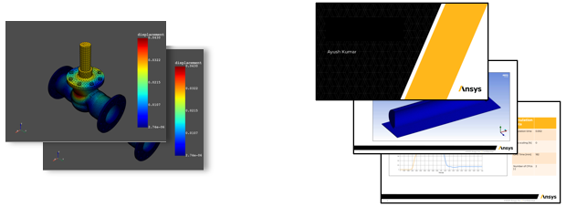

DPF capabilities and scripting languages#
DPF is a framework that provides data computation capabilities.
DPF as a framework#
DPF application: kernel and operator libraries#
DPF capabilities are provided through libraries of operators. To learn more about the computed data and the operator concepts, see Terms and concepts.
A DPF application is always composed of a kernel (DataProcessingCore and DPFClientAPI binaries), that enables capabilities by loading libraries of operators (for example, mapdlOperatorsCore library is basic library enabled by DPF). This application is also called a DPF Server application.
When starting a DPF application, you can customize the list of the libraries that the kernel loads. To learn more on how to customize the initialization of a DPF application, see DPF XML files.
DPF client: available APIs and languages#
DPF capabilities are enabled using the DPF Server application. These capabilities can be accessed through client APIs, as shown here:

The DPF server application can be accessed using an Ansys product, or DPF Server package (see DPF Server) available on the Customer portal.
Several client APIs are available (CPython, IronPython, and C++).
Communication in the same process, or through gRPC, allows you to have the client and the servers on different machines.
Note that IronPython and CPython APIs are different, each has a specific syntax.
The list of available operators when using DPF is independent from the language or API which is used. It depends only on how the DPF application has been initialized.
Most of the DPF capabilities can be accessed using the operators. For more information on the existing operators, see Operators.
Enhance DPF capabilities#
The available DPF capabilities loaded in a DPF application can be enhanced by creating new operator libraries. DPF offers multiple development APIs depending on your environment. These plugins can be:
CPython based (see Custom operators)
C++ based (see “DPF/USER GUIDE” section of C++ documentation)
DPF integration#
DPF is available as a standalone tool and as a tool in Ansys Mechanical. You should decide whether you want to use standalone DPF or DPF in Mechanical before creating any scripts.
DPF as a standalone application#
Standalone DPF can be used through any of the previously mentioned APIs.
In particular, DPF Standalone capabilities can be enabled using CPython and can be accessed via any Python console. Data can be exported to universal file formats, such as VTK, HDF5, and TXT files. You can use it to generate TH-plots, screenshots, and animations or to create custom result plots using the numpy and matplotlib packages.
Mechanical#
DPF in Mechanical uses IronPython and is accessible with the ACT Console. Use it to perform custom postprocessing and visualization of results directly within the Mechanical application.